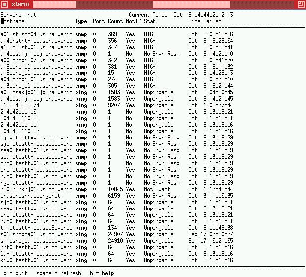

Latest stable Version: (As of 11-Oct-2005)
ftp://puck.nether.net/pub/jared/sysmon-0.92.2.tar.gz
Latest *BETA* Version can be found
here (if available)
Interested in getting the latest betas? E-Mail me: jared@puck.nether.net
Sysmon users mailing list and New Release announcement list
A brief description of what Sysmon is:
Sysmon is a network monitoring tool designed to provide high performance and accurate network monitoring. Currently supported protocols include SMTP, IMAP, HTTP, TCP, UDP, NNTP, and PING tests.
This tool is available in the public domain for anyone to use it that is interested. It provides better performance and checking capabilities than other tools such as Rover, Nocmon (not this: Nocmonitor), Whatsup, Big Brother, and other such tools.
If you would like to get on the sysmon announcement mailing list, directions can be found at http://puck.nether.net/mailman/listinfo.
Online html documentation
Example Configuration Files
HTML Changelog
Report a sysmon BUG

jared_at_puck_dot_nether_dot_net
© 1996-2011 - Jared Mauch
last updated at
Thu Sep 8 14:23:02 EDT 2011